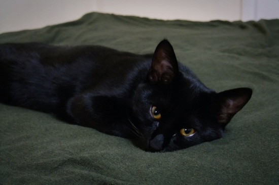

중성화수술을 했다. 수술은 10분 만에 끝났지만, 마취도 깨야 하고 수액도 마저 맞아야 해서 거의 2시간 반 정도를 병원에서 기다렸다. 카운터 너머 수술실에서 들리는 애옹~ 소리가 모두 간장의 비명인 것 같아 내심 괴로웠지만, 애써 아닌 척 책을 보며 기다렸다. 마취가 깬 후 남은 수액이 잘 들어가도록 앞다리를 잡아주는 동안 고생한 간장을 쓰다듬어 위로했다.
간호사 선생님 말씀으로는 집에 돌아오자마자 날아다니는 녀석들도 많다는데, 간장은 마취 기운이 아직 남았는지 비실대며 몸을 제대로 가누지 못한다. 측은한 마음에 전기장판을 켜고 조심스레 안아 침대에 올려주었더니 녀석은 내내 코를 박고 잠들어 있다. 아이고~ 간장, 애간장이 타누나.
힘들어하는 간장을 보면 미안하고 마음 아프지만, 함께 살기 위해 중성화수술은 피할 수 없는 선택인 것 같다. 삭막한 도시, 그것도 마당 한 뼘 없는 아파트에서 같이 살기로 작정한 이상 어느 정도의 희생은 서로 감수해야 한다. 유전자 보존의 본능 따위에 스트레스 받고 사느니, 나랑 엔조이하며 백년해로하는 편이 간장에게도 더 좋을 거라 위안한다.